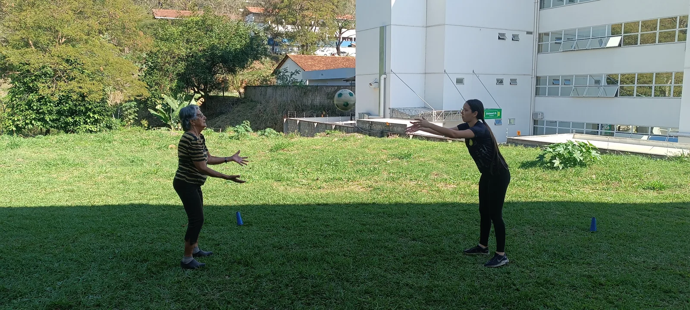

Passos de Resiliência
Caminhada e corrida para desenvolver condicionamento, saúde emocional e superação gradual de desafios.
Ver atividade
Extensão gratuita do IF Sudeste MG
Esporte, saúde e lazer conectando o Campus Avançado Cataguases à comunidade — com experiências inclusivas e formação prática para estudantes.
Encontre seu movimento
Conheça algumas das ações que reúnem exercício, convivência e cuidado. A disponibilidade de vagas e os requisitos são informados nos canais oficiais.
Caminhada e corrida para desenvolver condicionamento, saúde emocional e superação gradual de desafios.
Ver atividade
Exercícios físicos e cognitivos para autonomia, equilíbrio, força, mobilidade e qualidade de vida.
Ver atividade
Beach tennis para estimular coordenação motora, convivência, lazer ativo e habilidades socioemocionais.
Ver atividadeNosso alcance
Indicadores de referência da fase inicial do projeto.
famílias alcançadas
ações reunidas
meses de atuação
Como participar
Cada ação pode ter público, vagas e requisitos próprios. O caminho começa pelos canais oficiais do projeto.
Veja qual proposta combina com seu perfil e objetivo.
Observe público, faixa etária e orientações de segurança.
Acesse o canal oficial e acompanhe a disponibilidade.
Compareça aos encontros e compartilhe sua experiência.

Nosso propósito
O Movimente-se amplia o acesso gratuito a práticas que favorecem a saúde física, mental e social, enquanto aproxima o IF Sudeste MG da comunidade e cria experiências formativas para estudantes.

Consulte atividades, requisitos e inscrições nos canais oficiais do projeto.